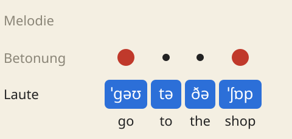

Klopfe den Rhythmus
Mit einem KI-Tutor lernen
Ein KI-Tutor erklärt dir diese Seite und hilft dir bei den Aufgaben. Wähl deinen Assistenten:
Mit Claude öffnen Mit ChatGPT öffnen Mit Mistral Vibe öffnen
Du nutzt dein eigenes Konto beim Anbieter. Der Assistent ist kein Angebot von lernapps.net: lernapps liefert nur Inhalte und Aufgaben. Die Wahl gilt für alle Seiten, nur auf diesem Gerät.
Sophies Sprachnachricht
Sophie schickt eine Sprachnachricht. Du kennst die Betonung im Wort und die schwachen Formen. Jetzt geht es um die Betonung im ganzen Satz.
Aufgabe
Lösung
großen, Hund richtige Antwort
Diese Wörter tragen die Bedeutung.
Ich, einen
Diese kleinen Wörter sind im Deutschen leiser.
Alle Wörter gleich
Dann klingt der Satz wie bei einem Roboter.
Im Englischen ist es genauso.
Das kannst du danach: Du erkennst, welche Wörter im englischen Satz betont werden, und sprichst Sätze mit dem passenden Rhythmus.
Die Nachricht
| Englisch | Deutsch |
|---|---|
| rhythm | der Rhythmus |
| tap | klopfen |
| castle | das Schloss |
| photos | die Fotos |
Hi everyone!
Hi from Millbrook! The weather is cold and wet, but the people are warm and kind.
Every morning I walk to school with Ellie and Peter. We eat toast and drink tea.
After lunch we have English with Mr Hill. He says my sentences have a nice rhythm now. I listen carefully, and I tap the strong words with my finger.
Next week we visit a castle. I will send you photos!
Bye for now, Sophie
Aufgabe
Lösung
Sie klopft bei den betonten Wörtern mit dem Finger. richtige Antwort
Das steht in ihrer Nachricht.
Sie singt die Sätze.
Davon steht nichts da.
Sie schreibt alle Wörter auf Karten.
Sie klopft nur.
Sophie klopft bei den betonten Wörtern.
Aufgabe
Lösung
He says my sentences have a nice rhythm now. richtige Antwort
Mr Hill lobt Sophies Rhythmus.
Next week we visit a castle.
Das ist ein Plan für nächste Woche.
We eat toast and drink tea.
Das beschreibt das Frühstück.
Mr Hill lobt den Rhythmus.
Betonte und leise Wörter
Im englischen Satz tragen die Wörter mit Inhalt die Betonung: Nomen, Verben, Adjektive, Adverbien (wie today) und Fragewörter. Kleine Wörter wie a, the, to, and und of sind schwach. In der Klangpartitur zeigen große rote Punkte die betonten Wörter.

Go to the shop: Zwei betonte Wörter, zwei schwache.
Quelle: eigene Zeichnung. Lizenz: CC-BY-4.0.Dadurch entsteht ein Rhythmus: Die betonten Wörter kommen ungefähr im gleichen Abstand. Stehen zwischen ihnen mehr kleine Wörter, sprichst du diese schneller. So wird ein langer Satz nicht langsamer.
Merke
- Betont sind Nomen, Verben, Adjektive, Adverbien und Fragewörter. Sie tragen die Bedeutung.
- Unbetont sind kleine Wörter wie a, the, to, and, of.
- Rhythmus: Die betonten Wörter kommen ungefähr im gleichen Abstand. Kleine Wörter dazwischen sprichst du schneller.
- Wer jedes Wort gleich betont, klingt wie ein Roboter.
Übung
Aufgabe
Lösung
boy richtige Antwort
Nomen sind betont.
eats richtige Antwort
Verben sind betont.
big richtige Antwort
Adjektive sind betont.
apple richtige Antwort
Nomen sind betont.
the
The ist ein kleines Wort und schwach.
a
A ist ein kleines Wort und schwach.
The und a sind schwach.
Aufgabe
Lösung
Richtige Antwort: 4
Amir, drinks, hot und tea sind betont.
Aufgabe
Lösung
Ungefähr gleich lang richtige Antwort
Die kleinen Wörter werden schneller gesprochen.
Der zweite Satz dauert viel länger.
Er hat mehr Wörter, aber die kleinen sind schnell.
Der erste Satz dauert länger.
Beide haben gleich viele betonte Wörter.
Es zählen die betonten Wörter, nicht alle Wörter.
Aufgabe
Lösung
where, bag richtige Antwort
Fragewort und Nomen sind betont.
is, my
Das sind kleine Wörter. Sie sind schwach.
where, is, my, bag
Dann klingt der Satz wie ein Roboter.
Fragewort und Nomen sind betont.
Sprich im Rhythmus
Aufgabe
Höre den Satz und nimm dich auf. Höre dich an und bewerte dich selbst. Die App hört nicht zu. Klopfe bei den betonten Wörtern mit.
Tipp
Klopfe bei Sophie, wants, go, shop und today.
- Sophie wants to go to the shop today.KI
Zum Aufnehmen braucht diese Aufgabe JavaScript. Die Beispiele kannst du auch ohne anhören.
Lösung
- Sophie wants to go to the shop today.
Offene Aufgabe
Schreibe eine kurze Sprachnachricht von drei englischen Sätzen über deinen Tag. Unterstreiche in jedem Satz die betonten Wörter. Sprich die Nachricht laut und klopfe mit. Schreibe auf Deutsch einen Satz dazu: Welche Wörter hast du schnell gesprochen?
Tipp
Nomen und Verben sind betont.
Eine gute Antwort enthält:
Lösung
I get up at seven. I eat cereal and drink milk. I walk to school with my friend. Schnell gesprochen: at, and, to, with, my.
Wie es weitergeht
Als Nächstes geht es um die Melodie: Wie zeigt die Stimme, ob jemand wirklich fragt oder nur Zustimmung erwartet?
Fehler gefunden oder eine Idee für diese App?